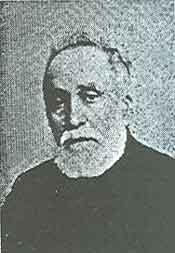

Ali Rýza Efendi (1861-1943)

Son dönem Osmanlý ulemasýnýn önde gelen isimlerindendir. Medrese eðitimini en üst seviyeye kadar tamamlandýktan sonra birçok görevde bulunmuþ ve Ýstanbul’da Fetva Eminliði de dahil, çok önemli mevkilerde hizmet vermiþtir. O da çaðdaþlarý gibi tarihimizin üç önemli devrini yaþamýþtýr. Ýlimdeki dirayeti, araþtýrma ve incelemeye önem vermesi, meselelere olan vukufiyetinden dolayý þeyhülislamlar gibi alaka ve ilgi görmüþtür. Risale-i Nur’u okuyup inceleme imkaný bulduktan sonra, her fýrsatta takdirlerini dile getirmiþtir. Yapýlan haksýz itirazlara karþý çýkmýþ ve Risalede ortaya konan meselelere tam destek vermiþtir. Eline geçen risaleleri dikkatle incelemiþ, Ýþaratü’l-Ý’caz için; “Bu Ýþârâtü'l-Ý'câz, bin tefsir kuvvetinde ve kýymetindedir” þeklinde övgüde bulunmuþtur.Ali Rýza, 1861 yýlýnda Muðla’da doðdu. Eðitimine medresede baþladý. Muðla’nýn Kurþunlu Camisi medresesinde müderrislik yapan Hacý Muhammed Zeki Efendi’den ders aldý. Burada eðitimini tamamladýktan sonra mezun olup icazet (diploma) aldý. Mezun olduðu sýrada 24 yaþýnda bulunmaktaydý.
Medreseden mezun olan Ali Rýza, Muðla’dan ayrýlarak Ýstanbul’a geldi. Yüksek öðrenim düzeyinde eðitim veren Ýstanbul Fatih Camii medresesine devam etti ve buradan da mezun oldu. Burada müderris Mehmet Neþ’et Efendiden ders aldý. Mezuniyetini de bu hocanýn elinden aldý.
Ali Rýza, memurluk hayatýna Fetvahane Ýlamat Odasý’na girmekle baþladý. Bu kurumun görevi, kadýlar tarafýndan verilen kararlarý temyiz yoluyla incelemekti. Ayný yýl ilmi rütbesi de yükseltilerek medresede hocalýk yapmaya baþladý ve ders okuttu. Bir süre sonra medresedeki ilmi derecesi yükselince, daha üst seviyede ders vermeye ve müderrislik yapmaya devam etti.
1915 yýlýnda Ali Rýza Efendi, Darü’l-Hilafeti’l-Aliyye Medresesi Hanefi Fýkhý Müderrisliðine tayin edildi. Darü’l-Hilafeti’l-Aliyye tabiri Ýstanbul için kullanýlan tabirlerdendir. Osmanlý devrinde Ýstanbul yerine; Ýslâmbol, Dersaadet, Deraliye tabirleri kullanýldýðý gibi Darü’l-Hilafeti’l-Aliyye tabiri de kullanýlmýþtýr. Darü’l-Hilafeti’l-Aliyye Medresesi tabiri ise Ýstanbul’un hilafetin merkezi olmasý hasebiyle, buradaki medreseleri diðerlerinden ayýrt etmek maksadýyla kullanýlan bir tabirdir.
Ali Rýza Efendi, yaklaþýk bir yýl sonra en üst düzeyde eðitim veren Sahn Medresesinde görev yapmaya baþladý. Müderrisliðine devam etti. Eylül 1917 tarihinde Süleymaniye Medresesi Medresetü’l-Mütehassinin kýsmýnda ders vermeye baþladý. Burada, alanýnda uzman olarak görev yapacak kimseler yetiþtirilmekteydi. Ayrýca, kadý yetiþtirmek amacýyla açýlan ve bu maksatla eðitim veren Medretü’l-Kudat’ta da görev yapýp ders verdi.
Ali Rýza Efendi, 18 Aðustos 1916 yýlýnda Fetva Emini oldu. Risale-i Nur’da bu görevinden dolayý, kendisinden eski Fetva Emini Ali Rýza Efendi olarak söz edilmektedir (Kastamonu Lahikasý, s. 149).
Fetva Eminliði, Kanuni Sultan Süleyman zamanýnda ihdas edilmiþtir. Þeyhülislama baðlý olan bu kurumun þer’i konularla ilgili meseleleri çözümlemek, fetvalar hazýrlamak, dilekçe yolu ile sorulan sorularý cevaplamak, þer’i mahkemeler tarafýndan verilen kararlarý incelemek, görevleri arasýnda yer almaktaydý. Bu kurumun baþýndaki kiþi Fetva Emini idi. Bu makama, en yüksek ilim sahibi olan ve memuriyetleri itibariyle unvanlarý uygun olanlar arasýndan seçilirdi. Fetva Eminleri arasýndan þeyhülislam olanlar da olmuþtur.
Ali Rýza Efendi, Bediüzzaman Hazretlerinin üyeleri arasýnda yer aldýðý Darü’l-Hikmet-i Ýslamiye’de baþvekillik görevinde bulundu. Bu göreve de 10 Aðustos 1918 tarihinde tayin edildi. Bu görevi baþkan tayin edilinceye kadar sürdürdü. Osmanlýnýn son zamanlarýnda kurulan ve bir Ýslam Akademisi mahiyetinde olan Darü’l-Hikmet-i Ýslamiye; Ýslam aleminde ortaya çýkan bir takým yeni dini meselelere ýþýk tutmak, özellikle de Ýslam’a yönelen hücum ve saldýrýlara karþý yayýn yoluyla cevap vermek ve mukabelede bulunmak maksadýyla kuruldu.
Ali Rýza Efendinin atandýðý önemli görev ve makamlardan bir tanesi de Huzur Dersleri Mukarrirliði’dir. Bu göreve de Aralýk 1918 yýlýnda getirildi ve üç sene de bu görevi sürdürdü. Mukarrirler Ramazan aylarýnda padiþahýn huzurunda ders veren hocalardýr. Bu göreve, medreselerde hocalýk yapan müderrisler içinden çok deðerli olanlar seçilirdi. Bu kiþiler bir çeþit konferans verir, bu konferansý ve dersleri dinleyenler baþta padiþah olmak üzere þehzade ve bazý saray görevlileri bulunurdu. Bu dersler Ramazanýn ilk gününden itibaren baþlardý.
Muhtelif görevlerde bulunan Ali Rýza Efendi, çok önemli görevlere atandýðý gibi üçüncü rütbeden Mecidi Niþaný ile de ödüllendirilmiþ, ayrýca kendisine Anadolu Kazaskerliði makamý ve unvaný da verilmiþtir.
Cumhuriyet döneminde de haytýný sürdüren Ali Rýza Efendi, 1927 yýlýnda emekli oldu. Bir ara tutuklanýp mahkum edildikten sonra ömrünün son zamanlarýný Üsküdar’da geçirdi. 31 Mart 1943 tarihinde vefat etti.
Ömrünü ilmi çalýþmalara adayan Ali Rýza Efendi, Risale-i Nur’un yayýnlanmasý ve bazý Risalelerin eline geçmesinden sonra bunlarý inceleyerek görüþlerini açýkladý. Kendisi, son dönem Osmanlý ulemasýnýn önde gelen isimlerinden biri ve çok müdakkik olmasý, þeyhülislamlar gibi alaka görmesi, fikirlerinin daha da dikkatle izlenmesine sebep olmaktaydý. Birinci Þua, Ýþarat-ý Kur’aniyye ve Ayetü’l-Kübrâ Risalelerini inceledikten sonra;
“Bediüzzaman, þu zamanda, din-i Ýslâm’a en büyük hizmet eylediðini ve eserlerinin tam doðru olduðunu ve böyle bir zamanda, mahrumiyet içinde, feragat-ý nefs edip, yani dünyayý terk edip böyle bir eser meydana getirmek hiç kimseye müyesser olmadýðýný ve her suretle þâyân-ý tebrik olduðunu ve Risale-i Nur, müceddid-i din olduðunu” Hafýz Emin’e beyan etti ve “Cenab-ý Hak, onu muvaffak-un-bilhayr eylesin!” (Kastamonu Lahikasý, 1997, s. 149) þeklinde duada bulundu. Ayrýca, Bediüzzaman’ýn sakal býrakmamasýndan dolayý bazý kimseler tarafýndan yapýlan itirazlara ve eleþtirilere karþýlýk olarak da; “Bediüzzaman'ýn dahi elbette bir içtihadý vardýr. Ýtiraz edenler haksýzdýr” demek suretiyle kendisini savunmuþtur. Hoca Mustafa aracýlýðýyla da þunlarýn iletilmesini talep etmiþtir:
“Bediüzzaman'a kemal-i hürmetle selâm ederim. Telifatýnýzýn ikmaline hýrz-ý can (yani, ruha nüsha olacak kadar kýymettar) ile dua etmekteyim. Bazý ulemâüssû'un tenkidine uðradýðýna müteessir olma. Zira 'Yemiþli aðaç taþlanýr.' kaziyesi meþhurdur. Mücahedatýnýza devam buyurun. Cenab-ý Hak ve Feyyâz-ý Mutlak âcilen murad ve matlubunuza muvaffakü'n bilhayr eylesin.” (Kastamonu Lahikasý, s. 150)
Ali Rýza Efendi, Risale-i Nur’un neþriyatýný takip ederek yakýndan ilgi gösterdi. Mucizat-ý Ahmediye risalesini okuduktan sonra da; “Bu tarz-ý ifade ve ispat ve beyaný hiçbir kitapta bulmamýþýz. Bu þerait içinde böyle eserler hiç kimseye müyesser olmamýþ” (Kastamonu Lahikasý s. 182), demek suretiyle takdirlerini bildirdi. Bir çok kez kendisini ziyarete giden ve yakýn çevresinde bulunanlara, “Bu Ýþârâtü'l-Ý'câz, bin tefsir kuvvetinde ve kýymetindedir” demek suretiyle yemin etmekteydi.” (Tarihçe-i Hayat, 1994, s. 94)
Bediüzzaman Hazretleri Denizli hapsinden evvel, Risale-i Nur’a birkaç cihetten hücumu hissettiðini söylemesinden kýsa bir süre sonra, Ýstanbul’da ihtiyar bir hoca bir risalenin bir meselesine itiraz etti. Bu itiraza karþýlýk Ali Rýza Efendi; o itiraza karþý çýkýp reddettiði gibi, Risale-i Nur’un ortaya koyduðu hakikatlere tam destek verdi. (Tarihçe-i Hayat, s. 288).